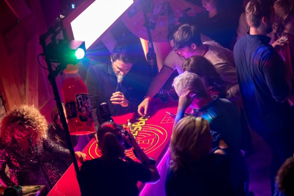
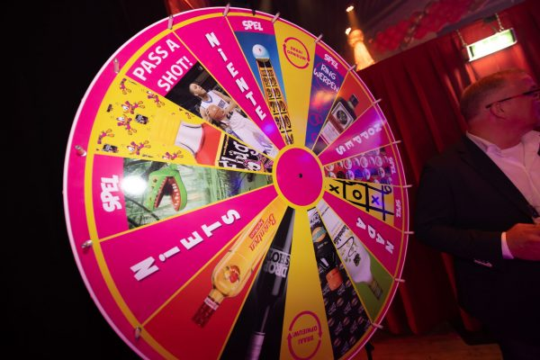
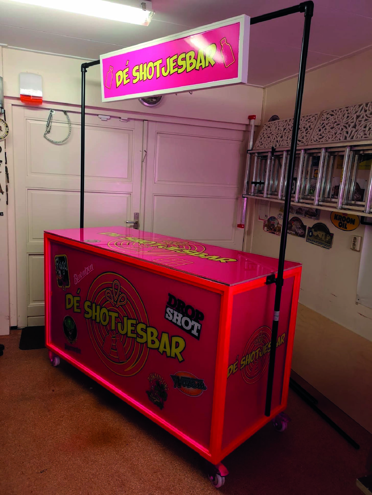
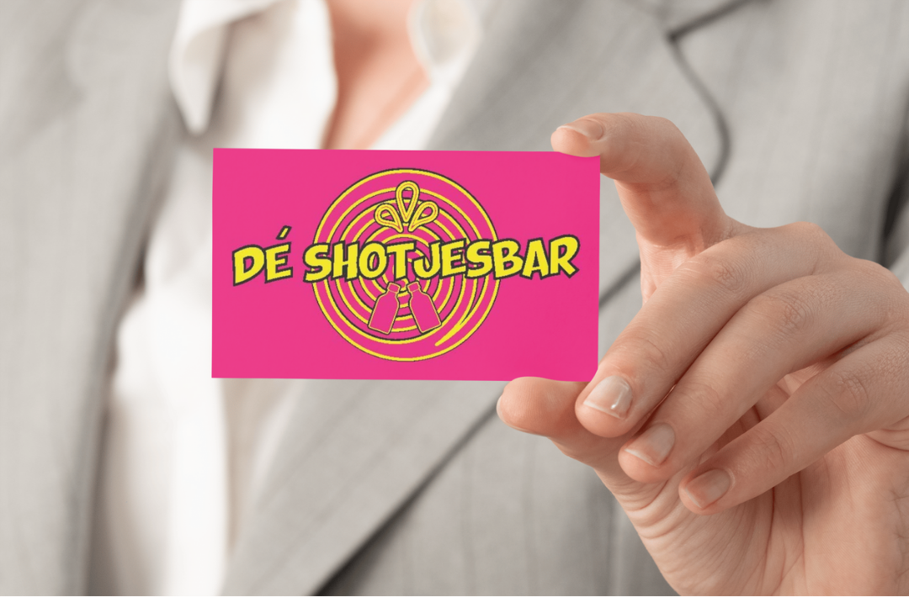
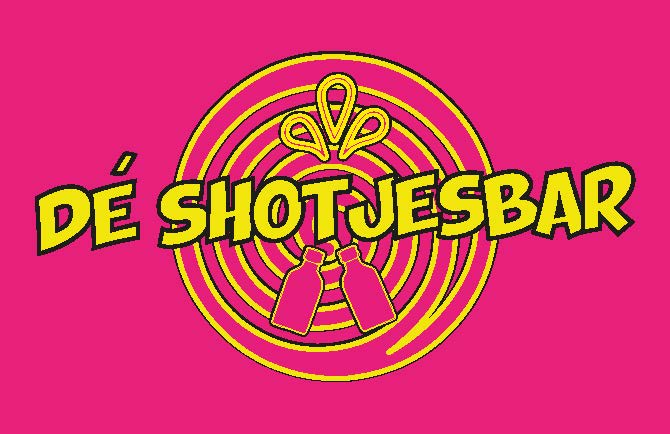

In opdracht van evenementenbureau Events & Planning heb ik het concept voor Dé Shotjesbar uitgewerkt en uitgevoerd. Het proces van het bedenken van het spelverloop tot het ontwerpen van de bar en de bouwtekeningen was mijn verantwoordelijkheid.
Het idee is simpel: bezoekers draaien aan het rad en kunnen daarmee verschillende shotjes verdienen of meedoen aan een aantal minigames. De belangrijkste eis was dat de bar moest opvallen en een 'foute' uitstraling moest hebben. In het ontwerp heb ik dit vertaald naar felle kleuren in de stijl van Flügel.
Dé Shotjesbar is inmiddels op meerdere evenementen succesvol ingezet.




